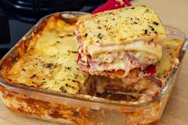

Receita Lasanha Tradicional

Ingredientes 8 porções
- 1 massa de lasanha (pronta)
- 500 g de queijo mussarela
- 1 massa de tomate pronta
- pimenta-do-reino a gosto
- 500 g de presunto
- 500 g carne moída
- sal a gosto
- orégano a gosto
Modo de Preparo
- Cozinhe a massa da lasanha em aproximadamente em 2 litros de água por 5 minutos.
- Em uma panela cozinhe a carne moída, depois de cozida coloque molho de tomate, o sal e temperos a gosto.
- Comece montando com uma camada de molho, a massa da lasanha, o presunto e o queijo
- Faça esse processo até tudo terminar.
- Aqueça o forno a 180º C durante 5 minutos.
- Coloque a lasanha no forno de 20 a 30 minutos.
Modo de Preparo em 50 minutos